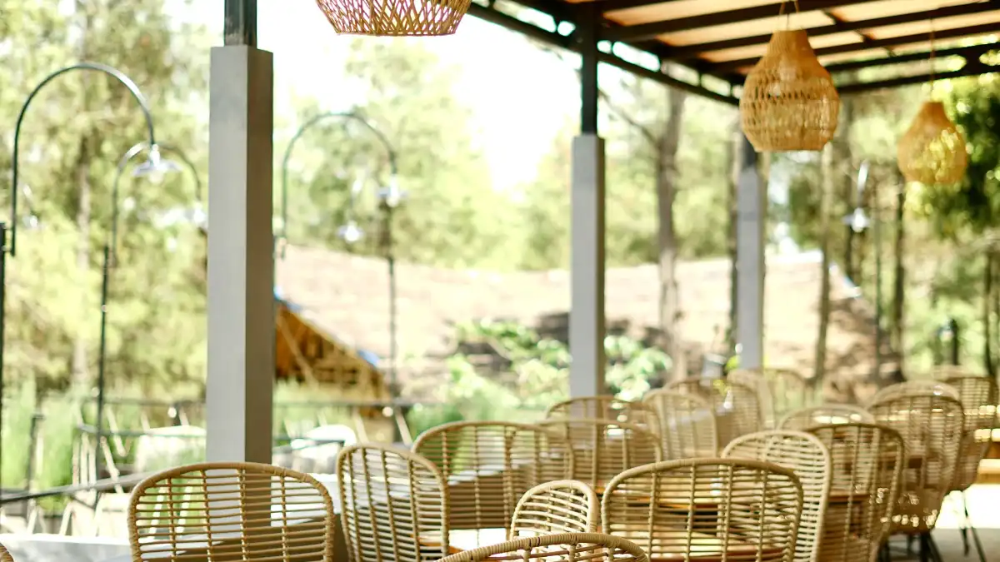

Ilustrasi Suasana malam hari di kawasan Tretes, Prigen udara
dingin
pegunungan berpadu dengan pemandangan gemerlap lampu kota yang syahdu.
Ilustrasi Suasana malam hari di kawasan Tretes, Prigen udara
dingin
pegunungan berpadu dengan pemandangan gemerlap lampu kota yang syahdu.
Wisata Tretes malam hari berarti menikmati udara dingin pegunungan yang syahdu, pemandangan gemerlap lampu kota dari ketinggian, cafe-cafe viral, kuliner hangat legendaris, dan deretan ide seru untuk malam keakraban (makrab) di kawasan Prigen, Pasuruan.
- Mengapa Tretes Malam Hari Berbeda dan Lebih Istimewa
- Suhu dan Kondisi Cuaca Tretes pada Malam Hari
- Spot City Lights Terbaik di Tretes Malam Hari
- Cafe Viral Tretes yang Wajib Dikunjungi Malam Hari
- Sentra Kuliner Malam Tretes yang Legendaris
- Ide Kegiatan Makrab Seru di Tretes Malam Hari
- Tips Aman Menikmati Wisata Tretes Malam Hari
- Rekomendasi Penginapan untuk Menginap Semalaman di Tretes
- Itinerary Wisata Tretes Malam Hari yang Ideal
- Kesimpulan
Mengapa Wisata Tretes Malam Hari Berbeda dan Lebih Istimewa?
Ketika sebagian besar wisatawan pulang setelah puas mengunjungi air terjun di siang hari, kawasan Tretes justru baru menunjukkan pesonanya yang sesungguhnya saat matahari terbenam. Gelap malam di pegunungan mengubah lanskap Tretes menjadi sebuah panggung yang menakjubkan.
Suhu yang semakin turun menciptakan hawa dingin yang menyegarkan sekaligus membuat siapa saja ingin berkumpul dan berbagi kehangatan. Di bawah sana, ribuan lampu kota dari Surabaya, Sidoarjo, dan Pasuruan menyala bak lautan bintang yang tumpah ke bumi, menciptakan pemandangan city lights yang tak ternilai dari ketinggian lereng Gunung Welirang dan Gunung Arjuna.
Bagaimana Suhu dan Kondisi Cuaca Tretes pada Malam Hari?
Pada malam hari, suhu di kawasan Tretes dan Prigen yang berada di ketinggian 600 sampai 900 mdpl dapat turun hingga 14 sampai 18 derajat Celsius, terutama pada musim kemarau antara bulan Juni hingga September.
Perbedaan suhu antara siang dan malam yang cukup signifikan ini justru menjadi daya tarik tersendiri. Bagi wisatawan dari dataran rendah seperti Surabaya dan Malang, sensasi kedinginan di Tretes saat malam hari adalah pengalaman yang menyenangkan dan menyegarkan.
Di Mana Spot City Lights Terbaik di Tretes Malam Hari?
Salah satu alasan utama orang berbondong-bondong ke Tretes pada malam hari adalah untuk menikmati pemandangan kota dari ketinggian. Beberapa spot terbaik untuk menikmati city lights di Tretes adalah dari area perbukitan menuju Jalan Pesanggrahan, teras hotel-hotel bintang yang menghadap ke arah utara dan timur, serta dari teras kafe-kafe yang sengaja didesain untuk memaksimalkan pemandangan tersebut.
Waktu terbaik menikmati city lights di Tretes adalah antara pukul 18.30 hingga 21.00 WIB, saat atmosfer langit masih bercampur antara senja yang memudar dan kegelapan malam yang mulai mengambil alih, menciptakan gradasi warna yang sangat dramatis.
Cafe Viral di Tretes yang Wajib Dikunjungi Malam Hari
Tren kafe tematik dengan konsep view alam dan city lights semakin marak berkembang di kawasan Tretes dan Prigen. Berikut adalah pilihan cafe viral yang sangat direkomendasikan:

Ilustrasi Suasana kafe di kawasan Tretes, Prigen konsep terbuka dengan pemandangan city lights yang memukau menjadi daya tarik utama wisata malam di sini.Ngopibareng Pintu Langit
Berlokasi di Jl. Raya Tulang, Ledug, Prigen, kafe ini adalah raja di antara semua kafe malam di kawasan Tretes. Namanya yang berarti “Pintu Langit” sangat sesuai dengan konsepnya. Dari sini, pengunjung bisa menikmati sensasi ngopi seolah berada di tepi langit dengan hamparan pemandangan kota di bawahnya. Buka hingga pukul 22.00 WIB, tempat ini sangat ramai pada akhir pekan.
D'Gunungan di Area Taman Dayu
Restoran dan kafe premium ini menawarkan dua pengalaman berbeda: saat sore hari, pengunjung dapat menikmati siluet megah Gunung Welirang yang berubah warna keemasan, dan saat malam, lautan gemerlap lampu kota menjadi hiburan visual yang tiada duanya. Menu yang disajikan mencakup masakan Nusantara dan Western dengan kualitas premium, cocok untuk acara makan malam rombongan perusahaan.
Bugs Café
Menawarkan konsep yang unik dan berbeda, kafe ini dikelilingi oleh danau buatan yang indah. Pantulan cahaya lampu di permukaan air di malam hari menciptakan suasana romantis yang sangat instagramable. Sangat cocok untuk pasangan atau kelompok yang ingin berfoto dengan latar belakang yang memukau.
BWT Cafe Tretes
Bagi kelompok yang lebih menyukai suasana santai dan harga yang bersahabat, BWT Cafe adalah jawabannya. Kafe ini buka hingga pukul 02.00 WIB dini hari dengan menu andalannya berupa roti bakar dengan berbagai topping mulai harga Rp15.000. Suasananya ramai dan asik, sangat cocok untuk sesi ngobrol panjang bersama teman atau tim.
Sentra Kuliner Malam Tretes yang Paling Legendaris
Wisata kuliner malam di Tretes adalah pengalaman yang tidak boleh dilewatkan. Puncak keramaian terjadi setelah magrib hingga dini hari, terutama di kawasan depan Hotel Surya.
Sate Kelinci: Kuliner Ikonik Tretes
Tidak afdol rasanya berkunjung ke Tretes tanpa mencoba sate kelinci. Daging kelinci yang dikenal lembut, juicy, dan rendah lemak ini dibakar dengan sempurna dan disajikan dengan dua pilihan bumbu: bumbu kacang khas Madura yang gurih atau kecap manis dengan irisan tomat dan bawang. Harga rata-rata Rp25.000 per porsi (10 tusuk).
Jagung Bakar dan Wedang Hangat
Pilihan kedua yang paling banyak diburu adalah jagung bakar dengan berbagai pilihan rasa. Sambil menikmati jagung, Anda bisa menghangatkan diri dengan wedang ronde (bola-bola ketan berisi kacang dengan kuah jahe manis) atau angsle (minuman hangat berbahan santan dan roti tawar) yang tersedia di banyak lapak pedagang kaki lima.
Soto Purel
Soto Purel adalah varian soto khas Pasuruan yang kuahnya lebih bening dan segar dibandingkan soto Lamongan. Disajikan panas-panas dengan harga sekitar Rp12.000 per mangkuk, ini adalah pilihan sempurna untuk menghangatkan perut di tengah malam yang dingin di Tretes.
Ide Kegiatan Makrab Seru di Tretes Malam Hari
Tretes malam hari adalah lokasi ideal untuk kegiatan malam keakraban (makrab) bagi mahasiswa, organisasi, maupun tim kerja perusahaan. Suasana dingin, pemandangan indah, dan fasilitas yang lengkap menciptakan kondisi sempurna untuk mempererat hubungan antar anggota.
Api Unggun dan Malam Keakraban di Villa
Banyak villa dan resort di Tretes menyediakan fasilitas api unggun di halaman terbuka mereka. Kegiatan api unggun yang dikombinasikan dengan penampilan seni, games kepercayaan, atau sesi berbagi cerita adalah formula klasik yang selalu berhasil menciptakan ikatan emosional yang kuat di antara peserta makrab.
City Light Tour dengan Kendaraan Terbuka
Salah satu kegiatan unik yang bisa dilakukan rombongan di malam hari adalah city light tour menggunakan jeep atau mobil terbuka mengelilingi jalur-jalur pemandangan terbaik di sekitar Tretes dan Prigen. Angin malam yang menusuk, ditambah pemandangan langit penuh bintang dan lautan lampu kota di bawah, akan menjadi pengalaman yang tidak terlupakan.
Kompetisi Foto Malam dan Konten Kreatif
Generasi muda sangat menyukai kegiatan yang berkaitan dengan konten. Adakan kompetisi foto malam atau pembuatan vlog singkat di spot-spot terbaik cafe dan city lights di Tretes. Pemenangnya bisa mendapatkan hadiah menarik. Selain seru, kegiatan ini secara tidak langsung mempromosikan destinasi dan acara secara organik di media sosial.
Kuliner Malam Bersama “City Foodie Tour”
Rancang sebuah “City Foodie Tour” di mana seluruh rombongan berjalan kaki menyusuri sentra kuliner malam Tretes bersama-sama. Tetapkan anggaran masing-masing peserta untuk mencoba sebanyak mungkin menu yang ada, lalu bagikan pengalaman dan review masing-masing di akhir malam. Ini adalah cara yang menyenangkan untuk mengenal kuliner lokal secara kompak.
Tips Aman Menikmati Wisata Tretes Malam Hari
Menikmati wisata Tretes malam hari memerlukan persiapan tambahan dibandingkan kunjungan siang hari. Berikut tips yang perlu diperhatikan:
- Jaket dan baju hangat wajib: Suhu malam di Tretes bisa turun hingga 14°C. Jaket tebal, syal, dan kaos kaki sangat diperlukan, terutama bagi yang datang dari dataran rendah.
- Sepatu tertutup dan anti selip: Jalan-jalan di kawasan pegunungan saat malam hari bisa licin karena embun, terutama setelah hujan sore.
- Charge penuh perangkat elektronik: Pastikan ponsel dan kamera dalam kondisi penuh untuk mengabadikan momen city lights dan suasana malam.
- Tetap dalam kelompok: Terutama bagi peserta makrab yang baru pertama kali ke Tretes, selalu jaga kesatuan kelompok dan pastikan semua anggota memiliki nomor kontak panitia.
- Konfirmasi jam operasional kafe: Meskipun beberapa kafe buka hingga larut malam, jam operasional dapat berubah. Konfirmasi terlebih dahulu, terutama untuk rombongan besar.
Rekomendasi Penginapan untuk Menginap Semalaman di Tretes
Untuk menikmati wisata Tretes malam hari secara maksimal, sangat disarankan untuk menginap setidaknya satu malam. Beberapa pilihan penginapan yang direkomendasikan:
| Penginapan | Keunggulan untuk Wisata Malam |
|---|---|
| Inna Tretes | Fasilitas lengkap, dekat pusat keramaian kuliner malam |
| Royal Tretes View | View city lights langsung dari kamar dan kolam renang |
| Vila sewa (grup) | Privasi penuh, bisa api unggun, ideal untuk makrab |
| Finna Golf Resort | Area luas, suasana ekslusif, cocok untuk corporate gathering |
Bagaimana Itinerary Wisata Tretes Malam Hari yang Ideal?
Rancangan itinerary malam di Tretes yang ideal dapat dimulai dari sore hari dan berlanjut hingga dini hari:
- Pukul 16.00 – 18.00: Check-in hotel atau villa. Istirahat sejenak dan persiapkan pakaian hangat.
- Pukul 18.00 – 19.30: Kunjungi spot city lights atau teras kafe untuk menikmati suasana senja ke malam (golden hour dan blue hour).
- Pukul 19.30 – 21.00: Makan malam di kafe pilihan (D'Gunungan atau Ngopibareng Pintu Langit) sambil menikmati pemandangan lampu kota.
- Pukul 21.00 – 23.00: Sesi kuliner malam merakyat di sentra depan Hotel Surya: sate kelinci, jagung bakar, soto purel.
- Pukul 23.00 – 01.00: Malam keakraban di villa (jika makrab): api unggun, games, atau sesi ngobrol santai.
- Pukul 01.00 – 02.00: Penutup di BWT Cafe dengan roti bakar dan minuman hangat.
Kesimpulan
Wisata Tretes malam hari menawarkan dimensi pengalaman yang jauh lebih kaya dan mendalam dibandingkan kunjungan siang hari biasa. Perpaduan unik antara udara dingin pegunungan yang syahdu, panorama city lights yang memukau dari ketinggian, deretan cafe viral dengan konsep tematik yang indah, sentra kuliner malam yang legendaris, dan suasana yang sangat kondusif untuk malam keakraban menjadikan Tretes malam hari sebagai destinasi yang memiliki daya tarik tersendiri.
Bagi rombongan yang berencana mengadakan makrab, gathering, atau sekadar liburan bersama yang berkesan, Tretes malam hari adalah pilihan yang sangat tepat di kawasan Jawa Timur.
Jika Anda membutuhkan alternatif venue outdoor dengan konsep camping ground yang juga menarik untuk kegiatan malam, jangan lupa cek paket camping Batu Camping di Kota Batu sebagai referensi tambahan untuk acara rombongan yang berkesan.
FAQ (Pertanyaan yang Sering Diajukan)